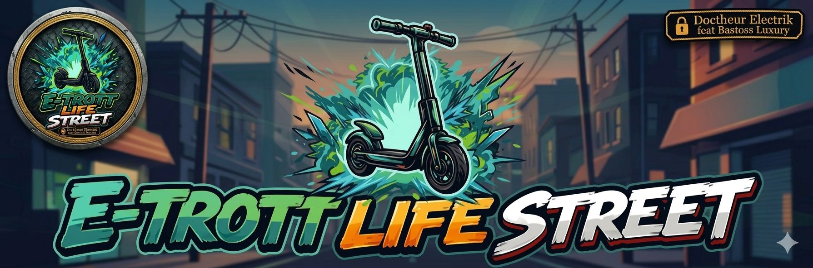
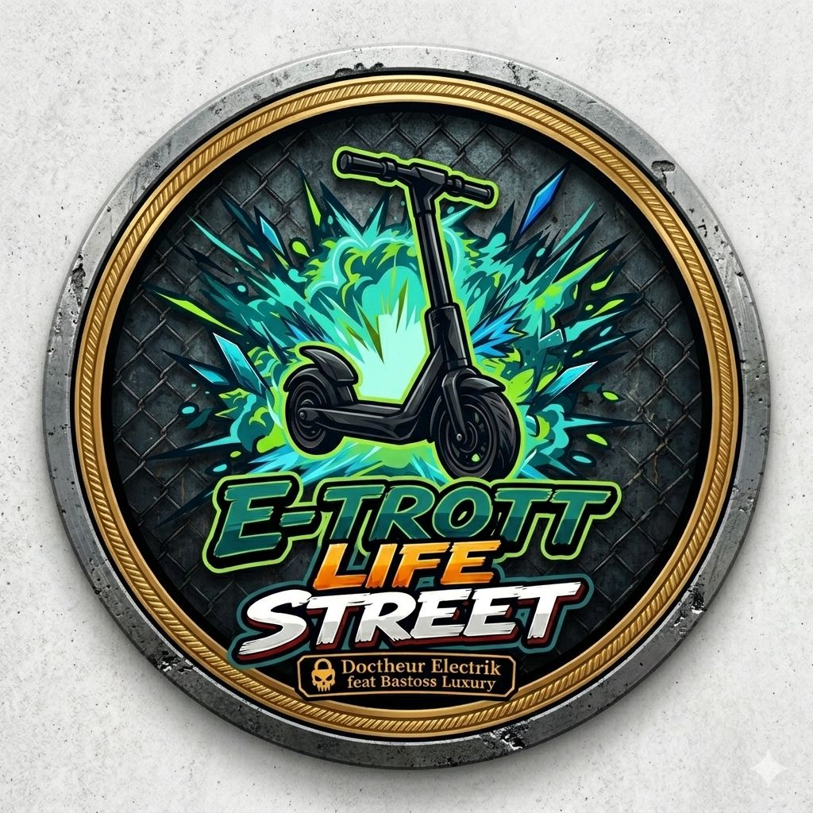

Nous sommes Doc Rider27 et Bastos Luxury, deux passionnés issus de l’univers des deux-roues et de la mécanique depuis toujours. Animés par la même énergie et la même culture du mouvement, ils évoluent chacun dans leur domaine de prédilection tout en partageant une vision commune.
Doc Rider27 s’est spécialisée dans l’univers de l’hyper trot, avec une vraie expérience du terrain et une passion pour la performance.
Bastos Luxury, de son côté, est passionné de custom, avec une approche centrée sur la personnalisation unique.
C’est de cette vision qu’est née leur marque : E-Trott-Life Street.
Vous souhaitez collaborer ? Contactez-nous par mail :
📩 collabetrootlifestreet@mail.fr